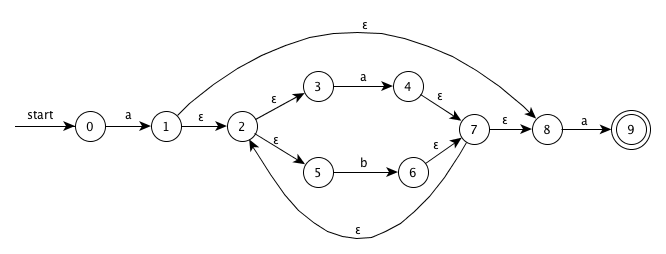
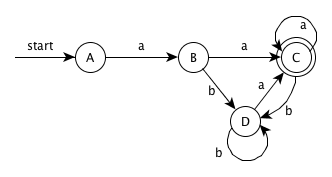
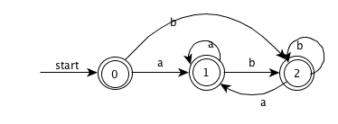
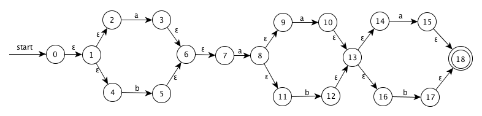
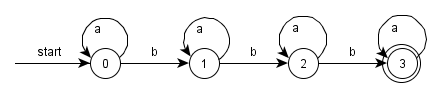

给出识别练习 3.3.2 中各个正则表达式所描述的语言状态转换图。
解答步骤：NFA -> DFA -> 最少状态的 DFA（状态转换图）
a(a|b)*a
NFA:

DFA:
| NFA | DFA | a | b |
|---|---|---|---|
| {0} | A | B | |
| {1,2,3,5,8} | B | C | D |
| {2,3,4,5,7,8,9} | C | C | D |
| {2,3,5,6,7,8} | D | C | D |

最少状态的 DFA(状态转换图):
合并不可区分的状态 B 和 D

((ε|a)b*)*

(a|b)*a(a|b)(a|b)
NFA:

DFA:
<table>
<thead>
<tr>
<th>NFA</th>
<th>DFA</th>
<th>a</th>
<th>b</th>
</tr>
</thead>
<tbody>
<tr>
<td>{0,1,2,4,7}</td>
<td>A</td>
<td>B</td>
<td>C</td>
</tr>
<tr>
<td>{1,2,3,4,6,7,8,9,11}</td>
<td>B</td>
<td>D</td>
<td>E</td>
</tr>
<tr>
<td>{1,2,4,5,6,7}</td>
<td>C</td>
<td>B</td>
<td>C</td>
</tr>
<tr>
<td>{1,2,3,4,6,7,8,9,10,11,13,14,16}</td>
<td>D</td>
<td><b>F</b></td>
<td><b>G</b></td>
</tr>
<tr>
<td>{1,2,4,5,6,7,12,13,14,16}</td>
<td>E</td>
<td><b>H</b></td>
<td><b>I</b></td>
</tr>
<tr>
<td>{1,2,3,4,6,7,8,9,10,11,13,14,15,16,<b>18</b>}</td>
<td><b>F</b></td>
<td><b>F</b></td>
<td><b>G</b></td>
</tr>
<tr>
<td>{1,2,4,5,6,7,12,13,14,16,17,<b>18</b>}</td>
<td><b>G</b></td>
<td><b>H</b></td>
<td><b>I</b></td>
</tr>
<tr>
<td>{1,2,3,4,6,7,8,9,11,15,<b>18</b>}</td>
<td><b>H</b></td>
<td>D</td>
<td>E</td>
</tr>
<tr>
<td>{1,2,4,5,6,7,17,<b>18</b>}</td>
<td><b>I</b></td>
<td>B</td>
<td>C</td>
</tr>
</tbody>
</table>
最少状态的 DFA(状态转换图):
合并不可区分的状态 A 和 C

a*ba*ba*ba*

给出识别练习 3.3.5 中各个正则表达式所描述语言的状态转换图。
构造下列串的失效函数。
对 s 进行归纳，证明图 3-19 的算法正确地计算出了失效函数。
图 3-19：计算关键字 b_1b_2…b_n 的失效函数
01 t = 0;
02 f(1) = 0;
03 for (s = 1; s < n; s ++){
04 while( t > 0 && b_s+1 != b_t+1) t = f(t);
05 if(b_s+1 == b_t+1){
06 t = t + 1;
07 f(s + 1) = t;
08 }else{
09 f(s + 1) = 0;
10 }
11 }
那么在第 1 次进入循环时，分两种情况进行考虑：
t == 0
这种情况比较简单，直接从第 5 行开始，当 b_i+1 == b_1 时，f(i+1) = 1，否则 f(i+1) = 0
说明图 3-19 中的第 4 行的复制语句 t = f(t) 最多被执行 n 次。进而说明整个算法的时间复杂度是 O(n)，其中 n 是关键字长度。
详见 matrix 的博文 KMP算法详解。
应用 KMP 算法判断关键字 ababaa 是否为下面字符串的子串：
说明图 3-20 中的算法可以正确的表示输入关键字是否为一个给定字符串的子串。
图 3-20：KMP 算法在 O(m + n) 的时间内检测字符串a_1a_3...a_n 中是否包含单个关键字 b1b2...bn
s = 0;
for(i = 1; i <= m; i ++){
while(s > 0 && a_i != b_s+1) s = f(s);
if(a_i == b_s+1) s = s + 1;
if(s == n) return "yes";
}
return "no";
假设已经计算得到函数 f 且他的值存储在一个以 s 为下标的数字中，说明图 3-20 中算法的时间复杂度为 O(m + n)。
详见 matrix 的博文 KMP算法详解。
Fibonacci 字符串的定义如下：
例如：s3 = ab, s4 = aba, s5 = abaab
s6 = abaababa
failure = [ 0, 0, 1, 1, 2, 3, 2, 3 ]
s7 = abaababaabaab
failure = [ 0, 0, 1, 1, 2, 3, 2, 3, 4, 5, 6, 4, 5 ]